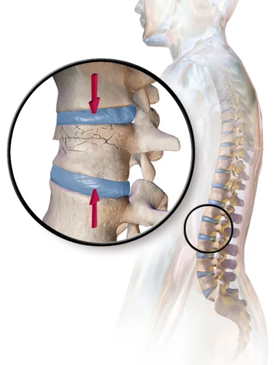
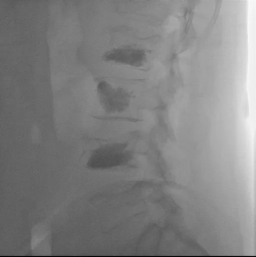

Видео в разработке — скоро появится здесь.
Что это за операция
Кифопластика — малоинвазивная процедура при компрессионном переломе позвонка, чаще всего связанном с остеопорозом. Через небольшой прокол под контролем рентгеновского изображения в тело сломанного позвонка вводят баллон и раздувают его. Это создаёт полость и иногда позволяет частично восстановить высоту позвонка. Затем баллон сдувают и извлекают, а полость заполняют костным цементом, который затвердевает.
- Цель — уменьшить боль и укрепить сломанный позвонок.
- Кифопластику могут рассмотреть, если сильная боль сохраняется после свежего остеопоротического перелома позвонка, который не сросся, несмотря на адекватное обезболивание. Обследование и снимки должны подтвердить, что боль идёт именно от сломанного позвонка (NICE TA279).
- Вид обезболивания (общий наркоз или местная анестезия с седацией) выбирает анестезиолог.
- Кифопластика не лечит сам остеопороз. После процедуры обсудите с врачом обследование и начало или продолжение лечения остеопороза, чтобы снизить риск новых переломов.


Подготовка
- Душ: вечером накануне операции вымойте тело и волосы. Утром повторите душ, если это указано отделением. Используйте мыло или антисептическое средство согласно инструкции отделения. Если есть аллергия на мыло или антисептики — сообщите персоналу.
- Не брейте кожу на спине в области операции сами.
- Сообщите заранее, если есть рана, ссадина или воспаление кожи на спине, температура, кашель, жжение при мочеиспускании, проблема с зубами — любая инфекция до операции.
- Принесите список всех лекарств и последние снимки/исследования позвоночника, если они у вас есть.
Лекарства перед операцией
Это общие правила. Точные указания даст ваш врач — следуйте им.
- Принесите список всех лекарств, которые принимаете.
- Препараты, разжижающие кровь (антикоагулянты и антиагреганты): останавливать — только по указанию врача. Аспирин не отменяйте сами.
- Если вы принимаете ингибиторы SGLT2 (например, эмпаглифлозин, дапаглифлозин или эртуглифлозин), заранее сообщите врачу, даже если у вас нет диабета: некоторые из этих лекарств назначают также при сердечной недостаточности и болезни почек. Перед плановой операцией эмпаглифлозин и дапаглифлозин обычно прекращают не менее чем за 3 дня, эртуглифлозин — не менее чем за 4 дня. Это помогает снизить риск кетоацидоза, который может возникать без выраженного повышения сахара крови. Когда прекратить и возобновить лечение, определяет врач. Не меняйте лечение самостоятельно.
- Инсулин и другие препараты от диабета: врач даст вам индивидуальный план на день перед операцией и на день операции. При диабете 1 типа не отменяйте базальный (длинный) инсулин самостоятельно.
- Голодание: обычно лёгкую еду необходимо закончить не менее чем за 6 часов до начала анестезии, жирную или тяжёлую — не менее чем за 8 часов. Прозрачные жидкости, например воду, обычно можно пить до 2 часов до анестезии. При некоторых заболеваниях, включая диабет и замедленное опорожнение желудка, правила могут отличаться. Следуйте точным указаниям отделения.
Дренаж
Кифопластику выполняют через небольшие проколы кожи. Если после процедуры у вас установлен дренаж, попросите команду объяснить его назначение и правила обращения с ним. Не трогайте и не отсоединяйте трубку самостоятельно.
Когда срочно обращаться за помощью
В больнице немедленно сообщите медсестре. После выписки немедленно обратитесь в приёмное отделение, если появилась новая или усиливающаяся слабость или онемение в ногах, онемение в области половых органов, между ног или вокруг заднего прохода (область «седла»), затруднение при начале мочеиспускания или при мочеиспускании, потеря обычного ощущения позыва к мочеиспусканию, невозможность помочиться либо новая потеря контроля над мочевым пузырём или кишечником. Не садитесь за руль сами. Если не можете безопасно добраться до приёмного отделения, вызывайте 101 («Маген Давид Адом»). При внезапной одышке, боли в груди, обмороке или выраженном затруднении дыхания немедленно вызывайте скорую помощь по номеру 101 («Маген Давид Адом»): после процедуры такие симптомы могут указывать на опасное осложнение, в том числе эмболию. Срочно свяжитесь с хирургическим отделением или обратитесь за медицинской помощью также при новой сильной боли в спине, температуре, нарастающем покраснении, отёке или выделениях из места прокола.
Официальные источники
- NICE, Percutaneous vertebroplasty and percutaneous balloon kyphoplasty, 2013, rec. 1.1
- NICE, Balloon kyphoplasty for vertebral compression fractures, HealthTech guidance HTG108 (formerly IPG166), published 26 April 2006
- NICE, Osteoporosis, QS149, Quality statement 2 (2017)
- NICE, Surgical site infections: prevention and treatment, NG125, rec. 1.2.1, 1.2.4–5
- FDA, Jardiance (empagliflozin), label revised 10/2025, §2.3 and §5.1
- FDA, Farxiga (dapagliflozin), label revised 06/2024, §2.4 and §5.1
- FDA, Steglatro (ertugliflozin), label revised 06/2026, §2.3 and §5.1
- ADA, Standards of Care in Diabetes—2026, section 16
- ASA, Practice Guidelines for Preoperative Fasting, Anesthesiology 2017
- NHS, Sciatica: emergency neurological symptoms
- CDC, About Venous Thromboembolism (Blood Clots)
- CHEST 2022 — Perioperative Management of Antithrombotic Therapy (Douketis et al.)
- Минздрав Израиля — циркуляр Медицинского управления 24/2001
- AAOS OrthoInfo, Osteoporosis and Spinal Fractures (Surgical Treatment → Kyphoplasty)
- Маген Давид Адом — официальный сайт
הסרטון בהכנה ויופיע כאן בקרוב.
מה הניתוח
קיפופלסטיקה היא פעולה זעיר־פולשנית לטיפול בשבר דחיסה בחוליה, לרוב על רקע אוסטאופורוזיס (דלדול עצם). דרך דקירה קטנה בגב ובהנחיית שיקוף רנטגן מחדירים בלון לגוף החוליה השבורה ומנפחים אותו. כך נוצר חלל, ולעיתים אפשר לשחזר חלק מגובה החוליה. לאחר מכן מרוקנים את הבלון ומוציאים אותו, וממלאים את החלל בצמנט עצם שמתקשה.
- המטרה — להפחית את הכאב ולחזק את החוליה השבורה.
- ניתן לשקול קיפופלסטיקה אם כאב חזק נמשך לאחר שבר אוסטאופורוטי טרי בחוליה שלא התאחה, למרות טיפול מתאים בכאב. הבדיקה והצילומים חייבים לאשר שהכאב נובע מהחוליה השבורה (NICE TA279).
- את סוג ההרדמה (הרדמה כללית או הרדמה מקומית עם טשטוש) בוחר הרופא המרדים.
- קיפופלסטיקה אינה מטפלת באוסטאופורוזיס עצמו. לאחר הפעולה שוחחו עם הרופא על בירור ועל התחלה או המשך טיפול באוסטאופורוזיס, כדי להפחית את הסיכון לשברים נוספים.
הכנה לניתוח
- מקלחת: בערב שלפני הניתוח יש להתקלח ולחפוף את הראש. בבוקר הניתוח יש לחזור על המקלחת אם המחלקה הנחתה כך. השתמשו בסבון או בתכשיר החיטוי לפי הוראות המחלקה. אם ידועה לכם אלרגיה לסבון או לחומרי חיטוי, דווחו לצוות.
- אל תגלחו בעצמכם את עור הגב באזור הניתוח.
- דווחו מראש אם יש פצע, שריטה או דלקת בעור הגב, חום, שיעול, צריבה במתן שתן, בעיה בשיניים — כל זיהום לפני הניתוח.
- הביאו רשימה של כל התרופות ואת צילומי ובדיקות עמוד השדרה האחרונים, אם יש לכם.
תרופות לפני הניתוח
אלה כללים כלליים. את ההוראות המדויקות יתן לכם הרופא — פעלו לפיהן.
- הביאו רשימה של כל התרופות שאתם נוטלים.
- תרופות לדילול הדם (נוגדי קרישה ונוגדי טסיות): מפסיקים רק לפי הוראת רופא. אל תפסיקו אספירין בעצמכם.
- אם אתם נוטלים מעכבי SGLT2 (למשל אמפגליפלוזין, דפגליפלוזין או ארטוגליפלוזין), הודיעו לרופא מראש גם אם אין לכם סוכרת: חלק מהתרופות האלה ניתנות גם באי־ספיקת לב ובמחלות כליה. לפני ניתוח מתוכנן נהוג להפסיק אמפגליפלוזין ודפגליפלוזין לפחות 3 ימים מראש, וארטוגליפלוזין לפחות 4 ימים מראש. כך מפחיתים את הסיכון לחמצת קטוטית, שעלולה להופיע גם ללא עלייה משמעותית ברמת הסוכר בדם. הרופא יקבע מתי להפסיק ומתי לחדש את הטיפול. אל תשנו את הטיפול על דעת עצמכם.
- אינסולין ותרופות אחרות לסוכרת: הרופא ייתן לכם תוכנית אישית ליום שלפני הניתוח וליום הניתוח. בסוכרת סוג 1 אל תפסיקו בעצמכם את האינסולין הבזאלי (ארוך הטווח).
- צום: בדרך כלל יש לסיים ארוחה קלה לפחות 6 שעות לפני תחילת ההרדמה, וארוחה שומנית או כבדה לפחות 8 שעות לפניה. בדרך כלל אפשר לשתות נוזלים צלולים, כגון מים, עד שעתיים לפני ההרדמה. במצבים מסוימים, כולל סוכרת והתרוקנות איטית של הקיבה, ההנחיות עשויות להיות שונות. פעלו לפי ההוראות המדויקות של המחלקה.
נקז
קיפופלסטיקה מתבצעת דרך דקירות קטנות בעור. אם לאחר הפעולה הוכנס לכם נקז, בקשו מהצוות להסביר מדוע הוא הוכנס וכיצד יש לשמור עליו. אל תיגעו בצינורית ואל תנתקו אותה בעצמכם.
מתי לפנות לעזרה דחופה
בבית החולים דווחו מיד לאחות. לאחר השחרור פנו מיד לחדר המיון אם הופיעו חולשה חדשה או מחמירה או חוסר תחושה ברגליים, חוסר תחושה סביב איברי המין, בין הרגליים או סביב פי הטבעת (אזור האוכף), קושי להתחיל להטיל שתן או קושי בהטלת שתן, אובדן התחושה הרגילה של צורך להטיל שתן, חוסר יכולת להטיל שתן או אובדן שליטה חדש על שלפוחית השתן או על המעיים. אל תנהגו בעצמכם. אם אינכם יכולים להגיע בבטחה לחדר המיון, הזמינו את מגן דוד אדום בטלפון 101. במקרה של קוצר נשימה פתאומי, כאב בחזה, עילפון או קושי חמור בנשימה, הזעיקו מיד אמבולנס של מגן דוד אדום בטלפון 101: תסמינים אלה עלולים להעיד על סיבוך מסוכן אחרי הפעולה, לרבות תסחיף. פנו בדחיפות למחלקה המנתחת או לקבלת טיפול רפואי גם אם הופיע כאב גב חדש וחזק, חום, אודם או נפיחות שמתגברים או הפרשה ממקום הדקירה.
מקורות רשמיים
- NICE, Percutaneous vertebroplasty and percutaneous balloon kyphoplasty, 2013, rec. 1.1
- NICE, Balloon kyphoplasty for vertebral compression fractures, HealthTech guidance HTG108 (formerly IPG166), published 26 April 2006
- NICE, Osteoporosis, QS149, Quality statement 2 (2017)
- NICE, Surgical site infections: prevention and treatment, NG125, rec. 1.2.1, 1.2.4–5
- FDA, Jardiance (empagliflozin), label revised 10/2025, §2.3 and §5.1
- FDA, Farxiga (dapagliflozin), label revised 06/2024, §2.4 and §5.1
- FDA, Steglatro (ertugliflozin), label revised 06/2026, §2.3 and §5.1
- ADA, Standards of Care in Diabetes—2026, section 16
- ASA, Practice Guidelines for Preoperative Fasting, Anesthesiology 2017
- NHS, Sciatica: emergency neurological symptoms
- CDC, About Venous Thromboembolism (Blood Clots)
- CHEST 2022 — Perioperative Management of Antithrombotic Therapy (Douketis et al.)
- משרד הבריאות — חוזר מינהל הרפואה 24/2001
- AAOS OrthoInfo, Osteoporosis and Spinal Fractures (Surgical Treatment → Kyphoplasty)
- מגן דוד אדום — האתר הרשמי
الفيديو قيد الإعداد وسيظهر هنا قريبًا.
ما هي العملية
رأب الحدبة عملية طفيفة التوغل لعلاج كسر انضغاطي في إحدى الفقرات، غالبًا بسبب هشاشة العظام. من خلال فتحة صغيرة في الظهر، وتحت توجيه التصوير بالأشعة السينية، يُدخل بالون إلى جسم الفقرة المكسورة ويُنفخ. يؤدي ذلك إلى تكوين تجويف، وقد يساعد أحيانًا على استعادة جزء من ارتفاع الفقرة. ثم يُفرّغ البالون ويُخرج، ويُملأ التجويف بإسمنت عظمي يتصلّب.
- الهدف — تخفيف الألم وتقوية الفقرة المكسورة.
- يمكن النظر في رأب الحدبة إذا استمر ألم شديد بعد كسر حديث في فقرة بسبب هشاشة العظام لم يلتئم، رغم العلاج المناسب للألم. ويجب أن يؤكد الفحص والصور أن الألم ناتج عن الفقرة المكسورة (NICE TA279).
- يختار طبيب التخدير نوع التخدير (تخدير عام أو تخدير موضعي مع تهدئة).
- عملية رأب الحدبة لا تعالج هشاشة العظام نفسها. بعد العملية، ناقشوا مع الطبيب الفحوص اللازمة وبدء علاج هشاشة العظام أو الاستمرار فيه، للحد من خطر حدوث كسور جديدة.
التحضير للعملية
- الاستحمام: في مساء اليوم السابق للعملية، استحمّوا واغسلوا الشعر. كرّروا الاستحمام صباح العملية إذا طلب القسم ذلك. استخدموا الصابون أو المطهّر حسب تعليمات القسم. إذا كانت لديكم حساسية من الصابون أو المطهّرات، فأبلغوا الطاقم.
- لا تحلقوا جلد الظهر في منطقة العملية بأنفسكم.
- أبلغوا مسبقاً إذا كان لديكم جرح أو خدش أو التهاب في جلد الظهر، حرارة، سعال، حرقة عند التبول، مشكلة في الأسنان — أي عدوى قبل العملية.
- أحضروا قائمة بكل الأدوية وآخر صور وفحوصات العمود الفقري إن وُجدت.
الأدوية قبل العملية
هذه قواعد عامة. سيعطيكم الطبيب التعليمات الدقيقة — اتبعوها.
- أحضروا قائمة بكل الأدوية التي تتناولونها.
- أدوية تمييع الدم (مضادات التخثر ومضادات الصفائح): يتم إيقافها فقط بتعليمات الطبيب. لا توقفوا الأسبرين بأنفسكم.
- إذا كنتم تتناولون مثبطات SGLT2 (مثل إمباغليفلوزين أو داباغليفلوزين أو إرتوغليفلوزين)، فأبلغوا الطبيب مسبقًا حتى إن لم تكونوا مصابين بالسكري، لأن بعض هذه الأدوية يُستخدم أيضًا لعلاج قصور القلب وأمراض الكلى. قبل العملية المخططة يُوقف إمباغليفلوزين وداباغليفلوزين عادةً قبل 3 أيام على الأقل، وإرتوغليفلوزين قبل 4 أيام على الأقل. وذلك لتقليل خطر الحماض الكيتوني الذي قد يحدث حتى دون ارتفاع ملحوظ في سكر الدم. يحدد الطبيب موعد إيقاف العلاج واستئنافه. لا تغيّروا العلاج من تلقاء أنفسكم.
- الإنسولين وأدوية السكري الأخرى: سيعطيكم الطبيب خطة فردية لليوم السابق للعملية وليوم العملية. في السكري من النوع الأول لا توقفوا الإنسولين القاعدي (طويل المفعول) بأنفسكم.
- الصيام: عادةً يجب إنهاء وجبة خفيفة قبل بدء التخدير بست ساعات على الأقل، ووجبة دسمة أو ثقيلة قبل ثماني ساعات على الأقل. يمكن عادةً شرب السوائل الصافية، مثل الماء، حتى ساعتين قبل التخدير. قد تختلف التعليمات في بعض الحالات، بما فيها السكري وبطء إفراغ المعدة. اتبعوا تعليمات القسم الدقيقة.
أنبوب التصريف (الدرنقة)
تُجرى عملية رأب الحدبة من خلال فتحات صغيرة في الجلد. إذا وُضع لكم أنبوب تصريف بعد العملية، فاطلبوا من الطاقم شرح سبب وضعه وطريقة التعامل معه. لا تلمسوا الأنبوب ولا تفصلوه بأنفسكم.
متى يجب طلب المساعدة فوراً
أبلغوا الممرضة فورًا إذا كنتم في المستشفى. بعد الخروج، توجّهوا فورًا إلى قسم الطوارئ إذا ظهر ضعف جديد أو متزايد أو خدر في الساقين، أو خدر حول الأعضاء التناسلية أو بين الفخذين أو حول فتحة الشرج (منطقة السرج)، أو صعوبة في بدء التبول أو في إخراج البول، أو فقدان الإحساس المعتاد بالحاجة إلى التبول، أو عجز عن التبول، أو فقدان جديد للتحكم بالمثانة أو الأمعاء. لا تقودوا السيارة بأنفسكم. إذا لم تتمكنوا من الوصول بأمان إلى قسم الطوارئ، اتصلوا بالرقم 101 (نجمة داود الحمراء). عند حدوث ضيق مفاجئ في التنفس أو ألم في الصدر أو إغماء أو صعوبة شديدة في التنفس، اتصلوا فورًا بالإسعاف على الرقم 101 (نجمة داود الحمراء)؛ فقد تدل هذه الأعراض على مضاعفة خطيرة بعد العملية، بما فيها الانصمام. تواصلوا بصورة عاجلة مع القسم الجراحي أو اطلبوا المساعدة الطبية أيضًا عند ظهور ألم جديد وشديد في الظهر، أو حمى، أو احمرار أو تورم متزايد، أو إفرازات من موضع الوخز.
مصادر رسمية
- NICE, Percutaneous vertebroplasty and percutaneous balloon kyphoplasty, 2013, rec. 1.1
- NICE, Balloon kyphoplasty for vertebral compression fractures, HealthTech guidance HTG108 (formerly IPG166), published 26 April 2006
- NICE, Osteoporosis, QS149, Quality statement 2 (2017)
- NICE, Surgical site infections: prevention and treatment, NG125, rec. 1.2.1, 1.2.4–5
- FDA, Jardiance (empagliflozin), label revised 10/2025, §2.3 and §5.1
- FDA, Farxiga (dapagliflozin), label revised 06/2024, §2.4 and §5.1
- FDA, Steglatro (ertugliflozin), label revised 06/2026, §2.3 and §5.1
- ADA, Standards of Care in Diabetes—2026, section 16
- ASA, Practice Guidelines for Preoperative Fasting, Anesthesiology 2017
- NHS, Sciatica: emergency neurological symptoms
- CDC, About Venous Thromboembolism (Blood Clots)
- CHEST 2022 — Perioperative Management of Antithrombotic Therapy (Douketis et al.)
- وزارة الصحة الإسرائيلية — تعميم الإدارة الطبية 24/2001
- AAOS OrthoInfo, Osteoporosis and Spinal Fractures (Surgical Treatment → Kyphoplasty)
- نجمة داود الحمراء — الموقع الرسمي
Video in development — it will appear here soon.
What this operation is
Kyphoplasty is a minimally invasive procedure for a vertebral compression fracture, most often caused by osteoporosis. Through a small puncture, guided by X-ray imaging, a balloon is placed inside the body of the broken vertebra and inflated. This creates a cavity and can sometimes partly restore the height of the vertebra. The balloon is then deflated and removed, and the cavity is filled with bone cement, which hardens.
- The goal is to reduce pain and strengthen the broken vertebra.
- Kyphoplasty may be considered if severe pain continues after a recent osteoporotic vertebral fracture that has not healed, despite appropriate pain treatment. Examination and imaging must confirm that the pain comes from the fractured vertebra (NICE TA279).
- The anesthesiologist chooses the type of anesthesia (general anesthesia, or local anesthesia with sedation).
- Kyphoplasty does not treat osteoporosis itself. After the procedure, talk with your doctor about testing and about starting or continuing osteoporosis treatment to lower the risk of new fractures.
Preparation
- Shower: the evening before surgery, wash your body and hair. Shower again in the morning if the ward tells you to. Use soap or an antiseptic product as the ward instructs. If you are allergic to soap or antiseptics, tell the staff.
- Do not shave the skin on your back at the surgery site yourself.
- Tell the staff in advance if you have a wound, scrape, or skin inflammation on your back, a fever, a cough, burning when you urinate, or a dental problem - any infection before surgery.
- Bring a list of all your medicines and your most recent spine images/tests, if you have them.
Medicines before surgery
These are general rules. Your doctor will give you exact instructions - follow them.
- Bring a list of all the medicines you take.
- Blood thinners (anticoagulants and antiplatelet drugs): stop them only if your doctor tells you to. Do not stop aspirin on your own.
- If you take SGLT2 inhibitors (for example, empagliflozin, dapagliflozin, or ertugliflozin), tell your doctor in advance, even if you do not have diabetes: some of these medicines are also prescribed for heart failure and kidney disease. Before planned surgery, empagliflozin and dapagliflozin are usually stopped at least 3 days ahead, and ertugliflozin at least 4 days ahead. This helps lower the risk of ketoacidosis, which can happen without a marked rise in blood sugar. Your doctor decides when to stop and restart treatment. Do not change your treatment on your own.
- Insulin and other diabetes medicines: your doctor will give you an individual plan for the day before surgery and the day of surgery. If you have type 1 diabetes, do not stop your basal (long-acting) insulin on your own.
- Fasting: usually you must finish a light meal at least 6 hours before anesthesia starts, and a fatty or heavy meal at least 8 hours before. Clear liquids, such as water, can usually be drunk until 2 hours before anesthesia. With some conditions, including diabetes and slow stomach emptying, the rules may differ. Follow the ward's exact instructions.
Drain
Kyphoplasty is done through small punctures in the skin. If you have a drain after the procedure, ask the team to explain its purpose and how to handle it. Do not touch or disconnect the tube yourself.
When to get urgent help
In the hospital, tell the nurse right away. After you go home, go to the emergency department (ER) immediately if you develop new or worsening weakness or numbness in your legs, numbness around the genitals, between the legs, or around the anus (saddle area), difficulty starting or passing urine, loss of the usual feeling that you need to urinate, inability to urinate, or new loss of bladder or bowel control. Do not drive yourself. If you cannot get to the ER safely, call 101 (Magen David Adom). If you have sudden shortness of breath, chest pain, fainting, or severe difficulty breathing, call an ambulance right away at 101 (Magen David Adom): after the procedure, such symptoms can point to a dangerous complication, including an embolism. Also contact the surgical ward or seek medical care urgently for new severe back pain, fever, spreading redness, swelling, or discharge from the puncture site.
Official sources
- NICE, Percutaneous vertebroplasty and percutaneous balloon kyphoplasty, 2013, rec. 1.1
- NICE, Balloon kyphoplasty for vertebral compression fractures, HealthTech guidance HTG108 (formerly IPG166), published 26 April 2006
- NICE, Osteoporosis, QS149, Quality statement 2 (2017)
- NICE, Surgical site infections: prevention and treatment, NG125, rec. 1.2.1, 1.2.4–5
- FDA, Jardiance (empagliflozin), label revised 10/2025, §2.3 and §5.1
- FDA, Farxiga (dapagliflozin), label revised 06/2024, §2.4 and §5.1
- FDA, Steglatro (ertugliflozin), label revised 06/2026, §2.3 and §5.1
- ADA, Standards of Care in Diabetes—2026, section 16
- ASA, Practice Guidelines for Preoperative Fasting, Anesthesiology 2017
- NHS, Sciatica: emergency neurological symptoms
- CDC, About Venous Thromboembolism (Blood Clots)
- CHEST 2022 — Perioperative Management of Antithrombotic Therapy (Douketis et al.)
- Israel Ministry of Health — Medical Administration circular 24/2001
- AAOS OrthoInfo, Osteoporosis and Spinal Fractures (Surgical Treatment → Kyphoplasty)
- Magen David Adom — official website